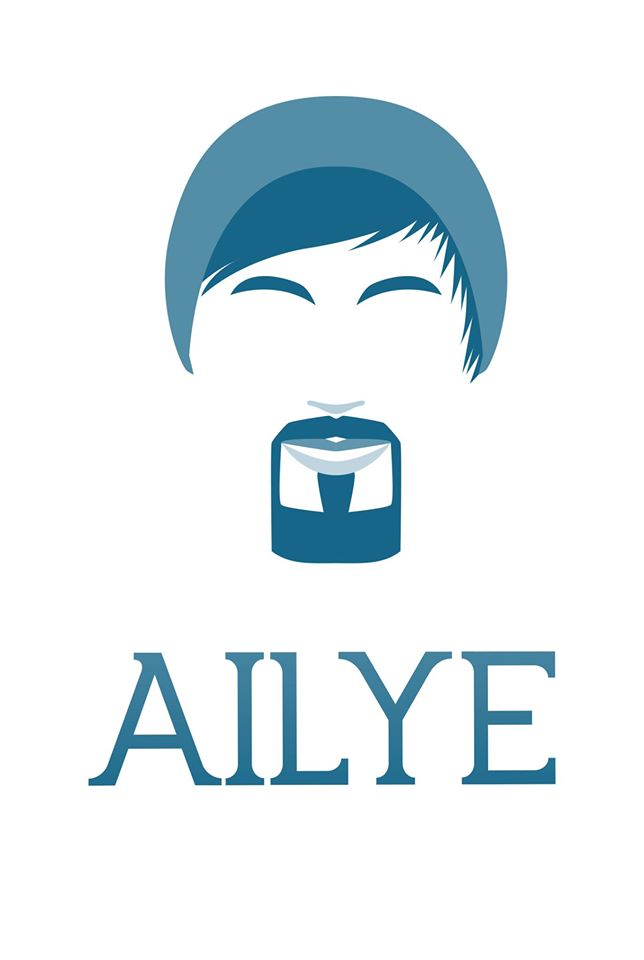

<mat-toolbar>
    <a href='/home'></a>
        <button [matMenuTriggerFor]="menu" class='buttonMargin' mat-raised-button>Pour en savoir plus</button>
        <mat-menu
            #menu="matMenu">
            <!-- A adapter avec les medias queries-->
            <button mat-menu-item disabled>
                <mat-icon>face</mat-icon>
                <span>Qui suis-je ?</span>
            </button>
            <button mat-menu-item disabled>
                <mat-icon>dashboard</mat-icon>
                <span>Programmation</span>
            </button>
            <button mat-menu-item disabled>
                <mat-icon>photo_album</mat-icon>
                <span>Galerie</span>
            </button>
            <a href='./dev'>
                <button mat-menu-item>
                    <mat-icon>code</mat-icon>
                    <span>Developpement Web & Co</span>
                </button>
            </a>
        </mat-menu>
        <div fxFlex></div>
    </mat-toolbar>
